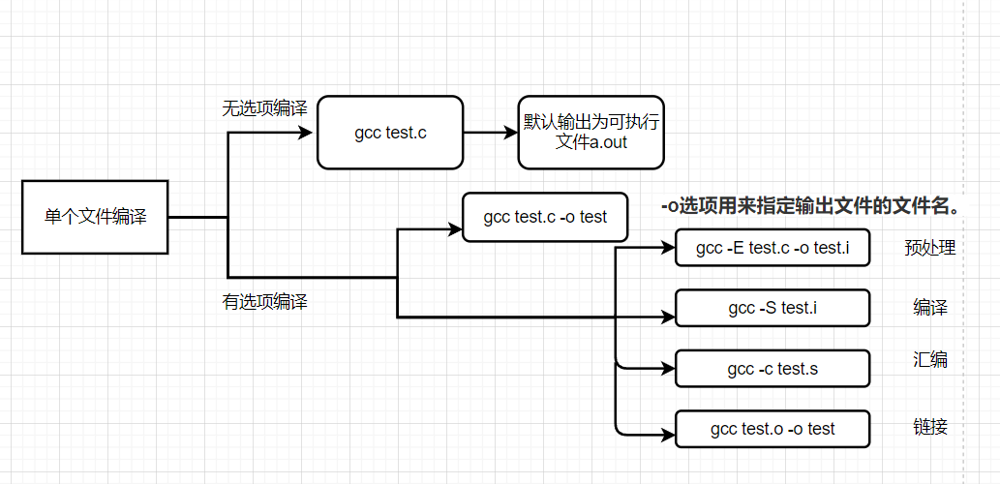

实验目的
认识操作系统实验环境
掌握操作系统实验所需的基本工具
个人感觉难点在于各种命令的熟练使用。
实验环境 一般而言，操作系统 shell 使用命令行界面（CLI） 或图形用户界面（GUI） ，这个纯文本的界面就是命令行界面，它能接收你发送的命令，如果命令存在于环境中，它便会为你提供相应的功能。
在Ubuntu中，我们默认使用的CLI shell是bash。
对于Linux系统来说，无论是中央处理器、内存、磁盘驱动器、键盘、鼠标，还是用户等都是文件，Linux系统的管理命令是它正常运行的核心，与Windows的命令提示符（CMD）命令类似。Linux命令在系统中有两种类型：内置Shell（外壳）命令和Linux命令。
Linux操作命令
ghy的总结，orz
操作 1 2 3 4 5 6 7 8 9 10 ls - list directory contents 用法：ls [选项]....[文件]... 常用选项： -a 不隐藏任何以. 开始的项目 -l 每行只列出一个文件 --block-size=SIZE 配合-l使用，打印时按照SIZE缩放尺寸 --color[=WHEN] 以彩色文本显示输出结果，WHEN=always,never,auto -h,--human-readable 以人类可以读懂的方式打印 -t 根据编辑时间排序，最新的在最前面 -u 根据访问时间排序，最新的在最前面
1 touch 修改文件或目录的时间属性，如果文件不存在，则ji
1 2 3 4 5 6 less <filename> 列出文件内容 /characters 查找指定字符串 n 向前查找下一个匹配的字符串 G 移动到最后一行 g 移动到开头一行
1 2 3 4 5 6 type <command> 显示命令的类型 命令有四种形式： - 一个可执行程序，可以是二进制文件或者脚本文件 - 内建于shell自身的命令 - shell函数 - 命令别名 alias
1 which <command> 显示一个可执行程序的位置
1 whatis <command> 简洁的打印命令的功能
1 2 3 4 5 6 alias <command name> = '<string>' 等号两侧不嫩有空格 创建命令 unalias <command name> 删除别名 alias 查看所有定义在系统环境中的别名
1 2 3 mkdir - make directories mkdir [选项]...[目录]... -p 确保目录名称存在，不存在就建一个
1 2 3 rmdir - remove empty directories rmdir [选项]...[目录]... 只空目录可用
1 2 3 4 5 6 7 rm - remove files or directories rm [选项]...[文件] 常用选项： -r 递归删除目录及其内容 -f 强制删除，忽略不存在的文件，不提示确认 -i 删除前逐一询问确认 -v 显示操作信息
1 2 3 ln 创建软连接或硬连接 ln file link 创建硬连接，硬链接不能跨越物理设备，不能关联目录 ln -s item link 创建符号连接，item可以是一个文件或是一个目录
1 2 3 4 cd - change working directory cd [路径] 常用选项： - 更改工作目录到上一次进入的目录
1 2 3 4 5 6 7 8 cat - 连接一个或多个文件，然后把它们打印到标准输出 cat [选项]...[文件]... 常用选项： -n 由1开始对输出的所有行编号 -b 与-n类似，但对空白行不编号 -s 当遇到有连续两行以上的空白行，就代换为一行的空白行 -E 在每行的结束处显示$ -T 将TAB显示为^I
1 2 3 4 5 6 7 8 9 10 11 12 13 cp - copy files and directories cp [选项]...源文件...目录 常用选项： -r 递归复制目录及其子目录内的所有内容 -a 相当于-dpr -d 复制时保留链接，相当与保留快捷方式 -p 除复制文件内容外也复制修改时间和访问权限 -r 若给出的源文件是一个目录文件，此时将复制该目录下所有的子目录和文件。 -i 询问是否覆盖已存在文件 -f 与-i相反 -u 当把文件从一个目录复制到另一个目录时，仅复制 目标目录中不存在的文件，或者是文件内容新于目标目录中已经存在文件的内容的文件 -v 显示翔实的操作信息 -l 不复制文件，只是生成链接文件
1 2 3 4 mv - move/rename file mv [选项]...源文件...目录 常用选项： 与cp基本一致
1 2 3 source - execute commands in file source 文件名 [参数] 注：文件应为可执行文件，即为绿色
1 2 locate 查找文件 执行一次快速的路径名数据库搜索，并且输出每个与给定字符串相匹配的路径名
1 2 3 4 5 6 7 find - search for files in a directory hierarchy find path -option [ -print ] [ -exec -ok command ] {} \; 常用选项： . 在所有文件的范围中查找 -name <name> 查找名称为<name>的文件，可以使用通配符 -type c 查找文件类型为c的文件，d:directory f:regular file -size n[cwbkMG] 查找大于，小于，或等于某一大小的文件。-代表小于，+代表大于。
1 2 3 4 5 6 7 8 9 10 11 12 13 grep - print lines matching a pattern grep [选项]...PATTERN [file]... 常用选项： -a -i -r -n -Cn -An -v -w -E grep 'xx'
1 2 tee <filename>... 从标准输入读入数据，复制数据到标准输出，同时将数据复制到一个或多个文件 一般用来捕捉管道中某一阶段的内容
1 2 3 4 5 tree tree [选项] [目录名] 常用选项： -a 列出全部文件 -d 只列出目录
1 2 3 4 5 6 7 8 9 10 11 12 13 14 15 16 17 18 linux文件调用权限：文件拥有者，群组，其它 chmod 更改文件或目录的权限，只有文件的所有者或者超级用户才可以这样做 chmod 权限设定字符串 文件... 可以使用八进制或符号表示发设定 权限设定字符串格式： [ugoa..][[+-=][rwxX]...][,...] u 该文件拥有者 g 与该文件的拥有者属于同一个群组 o 其他以外的人 a all的简写，是u，g，o的联合 + 增加权限 - 取消权限 = 唯一设定权限 r 可读取 w 可写入 x 可执行 X chmod +x my.sh //赋予my.sh可执行的权限_cjj
1 2 3 4 5 6 diff 比较文件差异 diff [选项] 文件1 文件2 常用选项： -b 不检查空格字符的不同 -B 不检查空行 -q 仅显示有无差异，不显示详细信息
sed 1 2 3 4 5 6 7 8 9 10 11 12 13 14 15 16 17 18 sed 文件处理工具 sed [-r] 'xxxxx' file sed -r '/[0-9]{3}/p' file 常用选项： -n -n 4,8p <file> -n 4p <file> 显示文件第4行的内容 -e 进行多项编辑，即对输入行应用多条 sed 命令时使用。 -i 直接修改读取的档案内容，而不是输出到屏幕。使用时应小心。 常用命令： a:新增 a 后紧接着\\，在当前行的后面添加一行文本 c:取代，c 后紧接着\\，用新的文本取代本行的文本 i:插入，i 后紧接着\\，在当前行的上面插入一行文本 d:删除，删除当前行的内容 p : 显示，把选择的内容输出。通常 p 会与参数 sed -n 一起使用 s : 取代，格式为 s/re/string，re 表示正则表达式，string 为字符串，将正则表达式替换为字符串
增删改查（功能）
sed-p查找
查找格式
‘1p’、’2p’
指定行号查找
‘1,5p’、’4,$p’
指定范围内查找
‘/xxx/p’
类似grep，过滤，//里可写正则
‘/10:00/,/11:00/p’
表示范围的过滤，若没有，则匹配首尾
sed-d删除
同sed-p，只需要把p改成d即可
sed-cai增加
同样可用p中的匹配方式
命令
c
change替代这行的内容
a
append追加内容（当前行的下一行）
i
insert插入（当前行的上一行）
1 2 sed -n '3a 996.icu' file sed -n '3c 955.wlb' file
sed-s替换(substitute)
1 2 sed -n 's#str1#str2#g' file sed -nr 's#(^.*)_(.*$)#\2_\1#g' file
1 2 3 4 ps 查看当前系统运行状态 x aux top 动态c
gcc

1 2 3 4 5 6 7 8 9 10 11 12 13 14 15 16 17 18 19 20 21 22 23 24 25 26 27 28 29 gcc GNU Compiler Collection GNU编译器套件 gcc [option]...[parameters]... 常用选项： -E 只激活预处理，但不生成文件，如果要查看需要重定向或使用管道。 -o <filename> 指定生成的输出文件 -S 将C代码转换为汇编代码（只激活预处理和编译） -Wall 显示所有警告信息 -g 在产生的目标文件中加入调试信息 -c 仅执行编译操作，不进行链接操作（激活预处理和编译，汇编） -ansi 关闭gun c中与ansi c不兼容的特性，激活ansi c的专有特性。 -M 列出依赖 -MM 列出依赖，但是忽略由include造成的依赖关系 -include filename 编译时包含头文件，相当于在代码中include "filename" -I<path> 编译时除了从默认路径搜索头文件外，还从<path>中搜索头文件，可以使用相对目录 -O0 -O1 -O2 -O3 优化级，O3最高 -O代表 -O1 -static 禁止使用动态库 -share 尽量使用动态库 -shared 产生共享对象，使用装载时重定位方法 -nostdlib 不连接系统标准启动文件和标准库文件，常用于编译内核，bootloader 在MOS中看到的： -O remove unneeded NOPs and swap branches -G<number> 将小于number字节数的全局变量和静态变量放在特定位置 -mno-abicalls Don't use Irix PIC 不懂， -fno-builtin 不使用内建函数 -Wa,<options> Pass comma-separated <options> on to the assembler -xgot assume a 32 bit GOT -fPIC 如果可以的话产生地址无关代码 -fpic 与-fPIC类似，不过产生的代码要小，但有平台限制。 -march= Specify CPU for code generation purposes
tmux 1 2 3 4 5 6 7 8 9 10 11 12 13 14 15 16 17 18 19 20 tmux 终端软件 一下操作均需先按ctrl+b，再按对应按键 窗格操作： % 水平分屏 " 垂直分屏 方向键 切换到对应方向的分屏 o 依次切换 z 最大化当前窗格 x 关闭当前窗格 窗口操作： c 创建新的窗口 p 切换上一个窗口 n 切换下一个窗口 num 切换到第num个窗口 w 列出所有窗口 会话操作： tmux new -s <name> 新建名为<name>的会话 d 退出会话 tmux a it <name> 通过<name>回到会话 tmux ls 查看会话名字
objdump 1 2 3 4 5 6 7 8 objdump 查看目标文件或者可执行的目标文件的构成的gcc工具 objdump [参数] [文件] 常用参数： -h -s -d -D -S
1 2 3 4 5 6 7 8 9 readelf 显示ELF文件信息 常用选项： -a -h -l -S -t -s
1 size 查看ELF文件的代码，数据，和bss段的长度
1 2 3 4 ld 链接器 常用参数： -T <script> 指定链接脚本 -N 把text和data节设置为可读写.同时,取消数据节的页对齐,同时,取消对共享库的连接.(不一定准确)
gxemul 1 2 3 4 5 gxemul 常用参数： -E t # 尝试模拟t型机器 -C t # 尝试模拟t类型的特定CPU -M m # emulate m MBs of physical RAM
vim
用了都说香！-cjj
1 2 3 4 5 6 7 8 9 10 11 12 13 14 15 16 17 18 19 20 21 22 vim ctrl n # 自动补全，tags文件需要在当前工作目录下 normal模式下： dd # 删除当前行，并把删除的行存到剪贴板里 yy # 拷贝当前行 p # 粘贴剪贴板 0 # 到行头 $ # 到行尾 /pattern # 搜索pattern字符串，按n键到下一个 u # 回退 ctrl-r # 撤销回退 :saveas # 另存为 :N # 到第N行 G # 到最后一行 gg # 到第一行 % # 匹配括号移动（需要把光标先移到括号上） *和# # 匹配光标当前所在的单词，移动光标到下一个（或上一个）匹配单词（*是下一个，#是上一个） :split → 创建分屏 (:vsplit创建垂直分屏) <C-w><dir> : dir就是方向，可以是 hjkl 或是 ←↓↑→ 中的一个，其用来切换分屏。 <C-]> # 跳转到函数定义处 <C-o> # 回到跳转前位置
shell的重定向与管道
三种流：
标准输入：stdin: 0
标准输出：stdout:1
标准错误：stderr:2
1 2 3 4 5 6 7 重定向输出 > 重定向追加输出 >> 重定向输入 < &>可以同时重定向标准输出与标准错误输出到指定文件 管道：| 可以连接命令 command1 | command2 | command3 | ... 是将 command1 的 stdout 发给 command2 的 stdin，command2 的 stdout 发给 command3 的 stdin，依此类推。
shell（字符）展开 在从命令行输入命令后，shell会将输入的命令进行展开，然后执行展开后的命令
跟家目录有关
有点像笛卡尔积
1 使用$<varname>来引用名为<varname>的变量，如果这个变量存在，$<varname>会替换为变量内容，否则替换为空字符串
把一个命令的输出作为另一个命令的一部分 来使用
1 shell会把$(command)替换为command的输出
shell键盘操作技巧
按键
行动
Ctrl-a
移动光标到行首。
Ctrl-e
移动光标到行尾。
Ctrl-f
光标前移一个字符；和右箭头作用一样。
Ctrl-b
光标后移一个字符；和左箭头作用一样。
Alt-f
光标前移一个字。
Alt-b
光标后移一个字。
Ctrl-l
清空屏幕，移动光标到左上角。clear 命令完成同样的工作。
Ctrl-d
删除光标位置的字符。
Ctrl-t
光标位置的字符和光标前面的字符互换位置。
Alt-t
光标位置的字和其前面的字互换位置。
Alt-l
把从光标位置到字尾的字符转换成小写字母。
Alt-u
把从光标位置到字尾的字符转换成大写字母。
tab
自动补全
Ctrl-r
开启增量历史搜索
linux文件类型与权限
属性
文件类型
-
一个普通文件
d
一个目录
l
一个符号链接。注意对于符号链接文件，剩余的文件属性总是”rwxrwxrwx”，而且都是 虚拟值。真正的文件属性是指符号链接所指向的文件的属性。
c
一个字符设备文件。这种文件类型是指按照字节流来处理数据的设备。 比如说终端机或者调制解调器
b
一个块设备文件。这种文件类型是指按照数据块来处理数据的设备，例如一个硬盘或者 CD-ROM 盘。
属性
文件
目录
r
允许打开并读取文件内容。
允许列出目录中的内容，前提是目录必须设置了可执行属性（x）。
w
允许写入文件内容或截断文件。但是不允许对文件进行重命名或删除，重命名或删除是由目录的属性决定的。
允许在目录下新建、删除或重命名文件，前提是目录必须设置了可执行属性（x）。
x
允许将文件作为程序来执行，使用脚本语言编写的程序必须设置为可读才能被执行。
允许进入目录，例如：cd directory 。
Makefile 基本规则：
1 2 3 4 target ... : prerequisites ... command ... ...
target:规则的目标，通常是最后需要生成的文件或者为了实现这个目的而必须的中间过程文件名，也可以是一个动作（伪目标）。
prerequisites：规则的依赖文件
command:要执行的命令，任意的shell命令或者可在shell下执行的程序，限定了make执行这条规则时所需要的动作。
1 2 3 4 .PHONY : 显式指明一个目标是伪目标 变量名称 = 值列表 定义变量，变量代表了一个文本字符串 变量名称 := 值列表 这样定义变量使得前面的变量不能使用后面的变量，只能使用前面已定义好的变量 $(变量名) 引用变量，执行时会原样替换在引用的地方
ifeq与ifneq 1 2 3 4 5 6 7 8 9 10 11 12 语法： ifeq (ARG1, ARG2) ifeq 'ARG1' 'ARG2' ifeq "ARG1" "ARG2" ifeq "ARG1" 'ARG2' ifeq 'ARG1' "ARG2" 例子： ifeq($(CC),gcc) $(CC) -o foo $(objects) $(libs_for_gcc) else $(CC) -o foo $(objects) $(noemal_libs) endif
自动化变量 1 2 3 $@ 表示规则中的目标文件集，在模式规则中，如果有多个目标，那么， $@ 就是匹配于目标中模式定义的集合。 $< 依赖目标中的第一个目标名字。如果依赖目标是以模式（即 % ）定义的，那么 $< 将是符合模式的一系列的文件集。注意，其是一个一个取出来的。 注意$@表示所有目标的挨个值，$<表示所有依赖目标
make的参数 1 --directory=<dir> # 指定读取makefile的目录
cjj：make -C path.. 递归调用
GIT git文件状态
untracked未跟踪：表示没有跟踪 (add) 某个文件的变化，使用 git add 即可跟踪文件
unmodified未更改：表示某文件在跟踪后一直没有改动过或者改动已经被提交
modified已更改：表示修改了某个文件, 但还没有加入 (add) 到暂存区中
staged已暂存：表示把已修改的文件放在下次提交 (commit) 时要保存的清单中
git三棵树
1 2 3 4 5 6 7 8 9 10 11 12 13 14 15 16 17 18 19 20 21 22 23 24 25 26 27 28 29 30 31 32 33 34 35 36 37 38 39 40 41 42 43 44 45 46 47 48 49 50 51 52 53 54 55 56 57 基础 git help <command> 获取git命令的帮助信息 git init 在当前目录下创建一个新的git仓库，其数据会存放在一个名为 .git 的目录下 git status 显示当前的仓库状态 git add <filename> 添加文件到暂存区（精确地将内容添加到下一次提交中） git commit submit all files in the index to the objects git commit -m 'note' 不会打开文本编辑器 git commit -a 将所有已经跟踪过的文件暂存起来一并提交，跳过git add步骤 git log 显示历史日志 git log --all --graph --decorate 可视化历史记录（有向无环图） git diff <filename> 显示同一个文件在工作区与暂存区中的差异 git diff --staged 显示同一个文件在暂存区与最后一次提交的差异 分支和合并 git branch 显示分支 git branch <branch-name> 添加分支（在当前的提交对象上创建一个指针） git checkout <branch-name> 切换到 <branch-name> 代表的分支，这时候 HEAD 游标指向新的分支，分支名后加^可以到其父节点。这个时候工作区中的内容也会被替换成该分支所指向的快照内容。 git branch -d(D) <branch-name> 删除分支，D是强制删除 git branch -a 查看所有的远程与本地分支 git branch -f <src> <obj> 强制移动<src>分支到<obj> git branch --set-upstream branch-name origin/branch-name 建立本地分支和远程分支的关联 git merge <branch-name> 合并指定分支到当前分支 如果想要合并的分支所指向的提交是现在所在的提交的直接后继，git会将指针向前 移动，这种方式叫Fast-f git rebase 变基 git checkout --<file> 用暂存区指定的文件替换工作区的文件。 git checkout HEAD <file> 会用 HEAD 指向的 master 分支中的指定文件替换暂存区和以及工作区中的文件。 撤销 git commit --amend 用一个新的提交替换最后的旧的提交 git rm <filename> 从暂存区及工作区删除文件 git rm --cached <filename> 直接从暂存区删除文件，工作区不做出改变（就是不再追踪这些文件的信息） git mv file_from file_to 给文件改名，包括工作区和暂存区 git reset HEAD <file> 暂存区的目录树会被重写，被 master 分支指向的目录树所替换，但是工作区不受影响。 git checkout -- <file> 丢弃工作区中的更改，用 git reset --hard hard后可以接想要转到的版本的哈希值。或者用HEAD^使之指向上一个版本 git revert 另一种撤销分支的方式，通过新添加一个提交来撤销 其它 git switch 新版本的分支切换功能 git remote 查看当前仓库已经配置的远程库的信息，-v可以列出仓库地址 git remote show <remote> 查看某一个远程库的信息 git remote add <shortname> <url> 为当前仓库添加一个新的远程仓库，可之后可以使用简写代替URL git remote rename <from> <to> 修改一个远程仓库的简写名 git remote rm <remote> 删除远程分支，所有和这个远程仓库相关的远程跟踪分支以及配置信息也会一起被删除。 git fetch <remote> 从远程仓库下载本地仓库中缺失的提交记录,并将本地仓库中的远程分支更新成了远 程仓库相应分支最新的状态。 git clone <url> [<local repo name>] 用于从远程仓库克隆一份到本地, git push <origin> <master> 把该分支上的所有本地提交推送到远程库。推送时，要指定本地分支，这样，Git就会把该分支推送到远程库对应的远程分支上。 git pull 从远程抓取分支 git config --list 列出所有配置 <key> 查看某一项配置 -local -l 查看仓库级的config -global -l 查看全局级的config -system -l 查看系统级配置 git config [–local|–global|–system] -e 使用默认的编辑器打开配置文件 git config [–local|–global|–system] –add section.key value 添加配置，默认添加在local
Shell工具和脚本
还是ghy总结的，orz，学会这些就差不多了
bash 常见操作
为变量赋值：=
访问变量中存储的值 ：$ 注意为变量赋值的时候等号左右不能有空格 ，否则bash会将第一个字符串作为程序调用，之后的字符串作为程序的参数传入程序。
bash中的字符串通过'和"定义，以'定义的字符串为原义字符串，其中的变量不会被转义，而 "定义的字符串会将变量值进行替换。
bash脚本的参数
$0 - 脚本名
$1 到 $9 - 脚本的参数。 $1 是第一个参数，依此类推。
$@ - 所有参数
$# - 参数个数
$? - 前一个命令的返回值，返回值为0代表程序正常执行 ，其他所有非零值表示有错误发生
$$$$ - 当前脚本的进程识别码
!! - 完整的上一条命令，包括参数。常见应用：当你因为权限不足执行命令失败时，可以使用 sudo !!再尝试一次。
$_ - 上一条命令的最后一个参数。如果你正在使用的是交互式shell，你可以通过按下 Esc 之后键入 . 来获取这个值。
$HOME，当前用户目录，登录后默认进入的目录。比如我的是/home/ghy
退出码可以搭配操作符&&或操作符||使用。对于&&操作符，只有当该操作符左侧的程序返回值非0时，该操作符右侧的程序才会被执行。对于||操作符，如果该操作符左侧程序返回值非0，则其右侧的程序不会被执行。如果该操作符左侧的返回值为0，右侧的程序才会被执行。
以变量的形式获取一个命令的输出（command substitution ）
当以上面的这种形式执行命令时，命令的输出会替换掉$(command)并再次执行。比如对于如下命令：
bash会先执行echo ls，然后将该命令的输出，即ls，作为bash的命令再次执行。所以$(echo ls)等价于ls .
语法：<variable>=$(<command>)
也可以将命令的输出赋值给一个变量。拿到了的输出。
还有一个冷门的类似特性是 进程替换 （process substitution ）， <( CMD ) 会执行 CMD 并将结果输出到一个临时文件中，并将 <( CMD ) 替换成临时文件名。这在我们希望返回值通过文件而不是STDIN传递时很有用。例如， diff <(ls foo) <(ls bar) 会显示文件夹 foo 和 bar 中文件的区别。
通配符(globbing 类似与正则表达式
使用?匹配一个任意的 字符
使用*匹配任意个 任意字符
例如，对于文件foo, foo1, foo2, foo10 和 bar, rm foo?这条命令会删除foo1 和 foo2 ，而rm foo* 则会删除除了bar之外的所有文件。
花括号{} - 执行时花括号中的值自动展开，可以搭配..使用。
例如，命令：
等价于
1 $ mkdir imagea imageb imagec imaged imagee imagef imageg
Shebang Shebang是一段由#!构成的字符序列，位于脚本开头的前两个字符。
在文件中存在Shebang的情况下，类Unix操作系统的程序加载器会分析Shebang后的内容，将这些内容作为解释器指令，并调用该指令，并将载有Shebang的文件路径作为该解释器的参数。
Shebang的指令形式：
例子：
#!/bin/sh—使用sh，即Bourne shell 或其它兼容shell执行脚本#!/usr/bin/python -O—使用具有代码优化的Python 执行使用#!/usr/bin/env 脚本解释器名称是一种常见的在不同平台上都能正确找到解释器的办法。
好用的工具
shell脚本 shell debug 1 2 3 bash -x a.sh set -x set +x
变量和常量 ？？？
给变量与常量赋值 值的类型：可以展开成字符串的任意值
1 2 3 4 5 6 7 a=z b="a string" c="a string and $b " d=$(ls -l foo.txt) e=$((5 * 7)) f="\t\ta string\n"
可以在同一行中对多个变量赋值
当由于变量名周围的上下文使得变量引用变得不明确的情况下，可以使用花括号将变量名包围 ，像这样：
1 2 3 4 filename="myfile" touch $filename mv $filename ${filename} 1
here documents 另一种输入重定向方式
Shell函数
shell 函数是位于其它脚本中的“微脚本”，作为自主程序。
两种语法形式：
1 2 3 4 5 6 7 8 9 function name { commands return } name commands return }
脚本中函数定义必须在函数调用之前 ，使用函数名调用函数。
调用函数时的参数传递方式与shell脚本相同。
通过在return后加上一个整型，shell函数可以返回退出状态。
局部变量 局部变量只能在定义它们的 shell 函数中使用，并且一旦 shell 函数执行完毕，它们就不存在了。
使用在变量名前加上local声明局部变量
if语句 语法：
1 2 3 4 5 6 7 if [ commands ]; then commands elif [ commands ]; then commands... else commands fi
测试 test命令经常与if搭配使用，有两种等价模式：
1 2 test expression [ expression ]
expression是一个表达式，执行结果是 true 或者是 false。当表达式为真时test返回True，否则为False。
测试字符串表达式
表达式
何时为真
string
string 不为 null。
-n string
字符串 string 的长度大于零。
-z string
字符串 string 的长度为零。
string1 = string2或string1 == string2
string1 和 string2 相同. 单或双等号都可以
string1 != string2
string1 和 string2 不相同。
string1 > string2
sting1 排列在 string2 之后。注意>要用双引号引起来或是用反斜杠转义
string1 < string2
string1 排列在 string2 之前。注意<要用双引号引起来或是用反斜杠转义
测试整数表达式
表达式
何时为真
integer1 -eq integer2
integer1 等于 integer2.
integer1 -ne integer2
integer1 不等于 integer2.
integer1 -le integer2
integer1 小于或等于 integer2.
integer1 -lt integer2
integer1 小于 integer2.
integer1 -ge integer2
integer1 大于或等于 integer2.
integer1 -gt integer2
integer1 大于 integer2.
更现代的测试版本 相比于test，这样写增加了两个新功能：
1 [[ string1 =~ regex ]] # 如果string1匹配扩展的正则表达式 regex，则返回值为真
1 2 FILE=foo.bar if [[ $FILE == foo.* ]]; then # ==操作符支持类型匹配
(( )) - 为整数设计 (( ))被用来执行算术真测试 。如果算术计算的结果是非零值，则一个算术真测试值为真。
结合表达式 逻辑操作符
操作符
测试
[[ ]] and (( ))
AND
-a
&&
OR
-o
\
\
NOT
!
!
while循环 语法：
1 2 3 while commands; do commands done
和 if 一样， while 计算一系列命令的退出状态。只要退出状态为零，它就执行循环内的命令。
具有break与continue
总结 lab0不难，如果喜欢学新东西还是很有意思的，毕竟上述的命令展现出的强大功能相当震撼。
This is copyright.